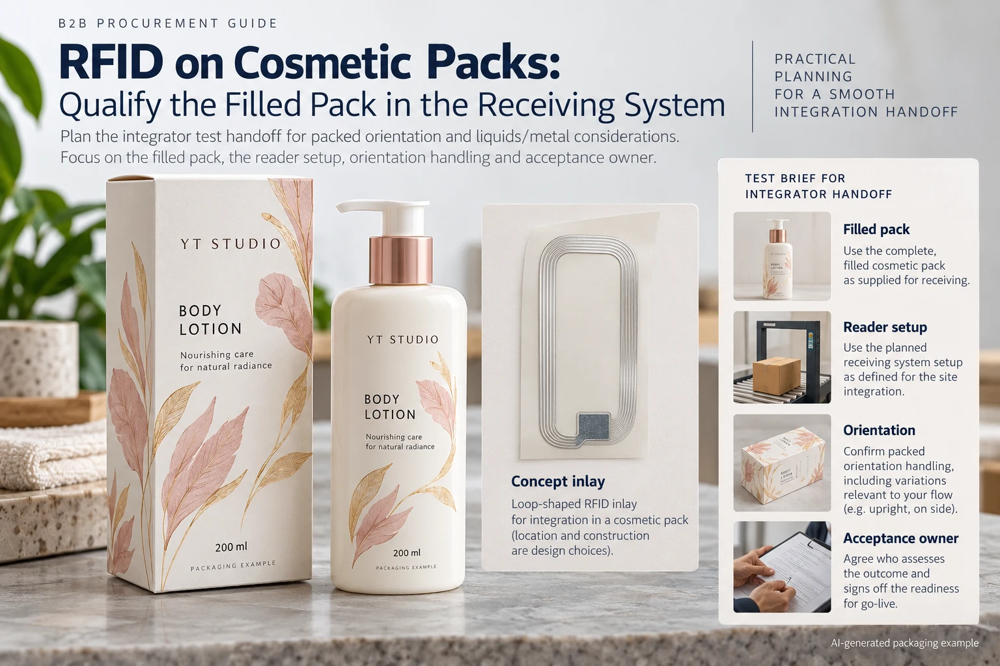

A beauty retailer asks about RFID, and the packaging brief adds an inlay behind the lotion label. The label still fits the bottle. That settles a drawing question. It does not show whether the filled pack will be identified correctly in the retailer's actual reading arrangement.
Define the receiving task and qualify the proposed RAIN RFID arrangement on representative filled, assembled packaging before fixing the label design. Treat the specialist tag, data encoding, reader environment and printed label as connected components with different responsibilities.
Write the reading task before selecting a tag
Identify who needs the reading result, what object it identifies and where the event happens. A single product at a controlled station, several items in a case and stock on a shelf are different arrangements. Ask the receiving-system owner for the applicable specification and acceptance process.
Also clarify whether the request is RAIN RFID for the operational system or NFC for a consumer-phone interaction. Do not substitute one because both can be discussed as smart labels. Our data-carrier choice guide explains why the receiving task comes before the visible symbol choice.
The project may not need a smart label at all. If no actual system owner can describe the required result, ask for that clarification before requesting an unfamiliar component or promising a digital feature on the pack.
Make liquids and metallic components visible in the brief
GS1 explains that metal and liquids can affect RFID performance, and that purpose-designed arrangements can address some of those conditions. That is a reason to evaluate the actual package rather than assume a generic inlay works everywhere. It is not evidence of a read distance for this lotion bottle.
Provide the filled container, closure, decorative metallic layers and any outer packaging. Identify likely orientations and the way items are grouped. A tag demonstrated loose on a desk has not represented all those conditions.
Have the qualified RFID supplier or integrator propose the tag and placement for the stated task. The label converter needs to know the resulting dimensions, integration requirements and any effect on label handling. A printed antenna-like illustration is not a functioning tag.
Use a packaging-to-system qualification brief
| Input | Record | Responsible party |
|---|---|---|
| Business event | Object, location and result the system needs | Brand and receiving-system owner |
| Pack | Filled container, closure, decoration and outer pack | Packaging team |
| Tag and encoding | Specialist reference, data scheme and controlled source | RFID provider and data owner |
| Reading arrangement | Actual reader setup, orientation and grouping | Integrator and receiving operation |
| Acceptance | Agreed method, required outcome and report scope | Receiving owner and competent technical parties |
Complete the task and pack fields first. Obtain the proposed specialist arrangement, then agree how representative packs will be assessed. Record which conditions and variants were included. Link the resulting observations and decision to the exact pack and tag references.
Keep exceptions in the report. A configuration that works in one orientation is not automatically accepted in another. If a relevant fill, closure or pack arrangement was not represented, mark it unexamined rather than extending the conclusion by assumption.

Keep the printed label and electronic identity connected
Ask how the electronic data will be mapped to the intended product and any human-readable identifier. Who supplies the records, who encodes them and who reconciles exceptions? A physically readable tag can still carry the wrong data.
Identify the stage at which electronic output is checked and what happens to rejected or replaced labels. If item-level serial identities are part of the arrangement, define allocation and reprint control with the system owner. Do not generate an independent set of numbers just because a print template accepts a changing field.
Preserve the ordinary label requirements too: approved copy, dimensions, material, print appearance and the application format. Adding a tag does not remove the need to check whether the combined supplied construction can be dispensed and applied in the intended operation.
Two stages of a project can need different evidence
A hypothetical feasibility project may need a limited specialist demonstration to learn whether a proposed placement deserves further development. Its report should describe that exploratory scope. It should not be presented as production acceptance by a retailer who has not reviewed it.
A project with an actual receiving requirement needs the relevant acceptance evidence before release. The line-trial guide covers ordinary application handoff; the RFID brief adds a system-reading decision that the applicator trial alone cannot settle.
Stop when the receiving task is undefined, the tested package differs from production, the encoding owner is unknown or the acceptance result cannot be tied to the proposed configuration. Ask the integrator and receiving owner to resolve those items before freezing the layout.
Ask which parts of the project each supplier can support
For a cosmetic-label inquiry, provide the pack, dimensions, artwork, quantity and application method, together with the specialist tag proposal and receiving requirement. Confirm current support for any electronic integration or encoding work; this guide does not advertise a verified YT Labels RFID service.
Use the inquiry form to prepare the coordination request. Send approved references by email or WhatsApp; files are not uploaded by the form. Keep responsibility for tag selection and system qualification with the parties who can substantiate the proposed result.